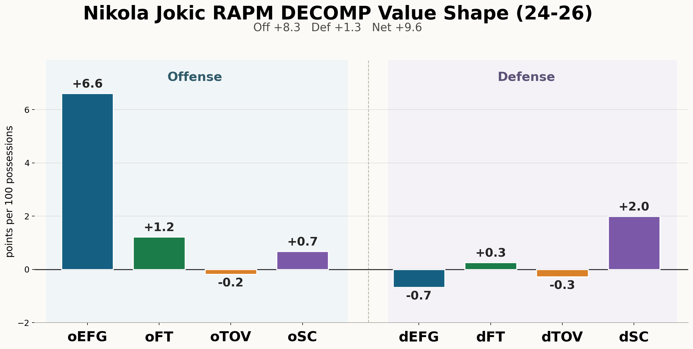
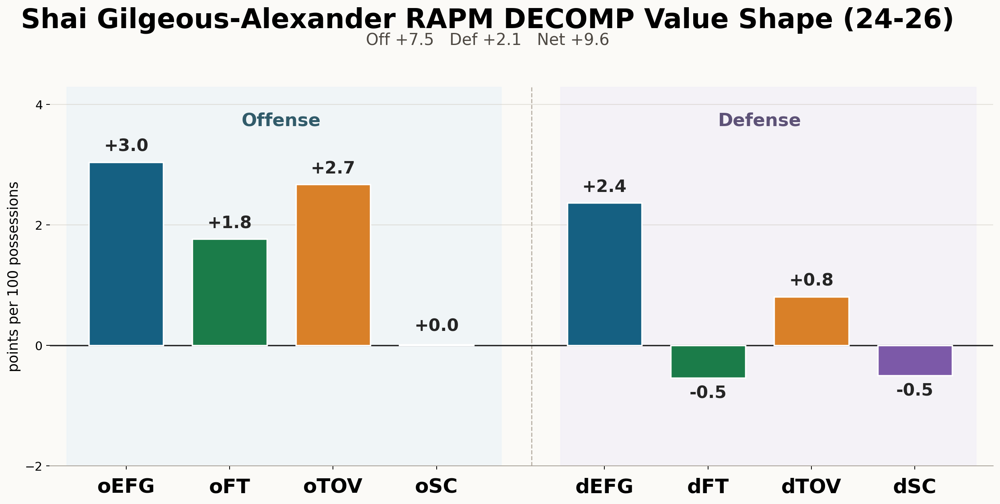
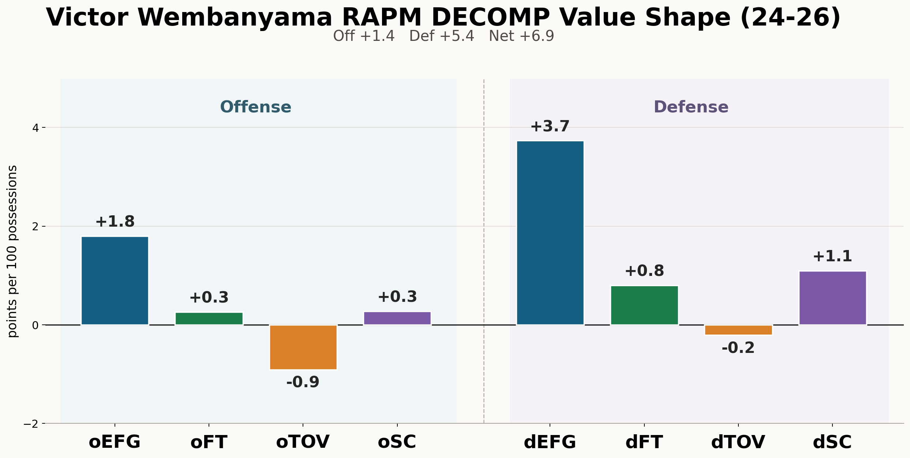
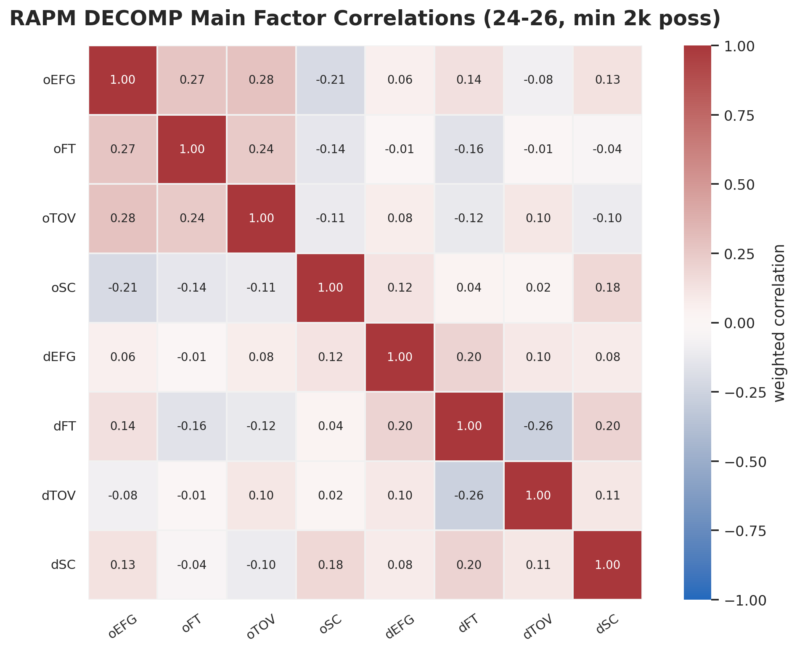
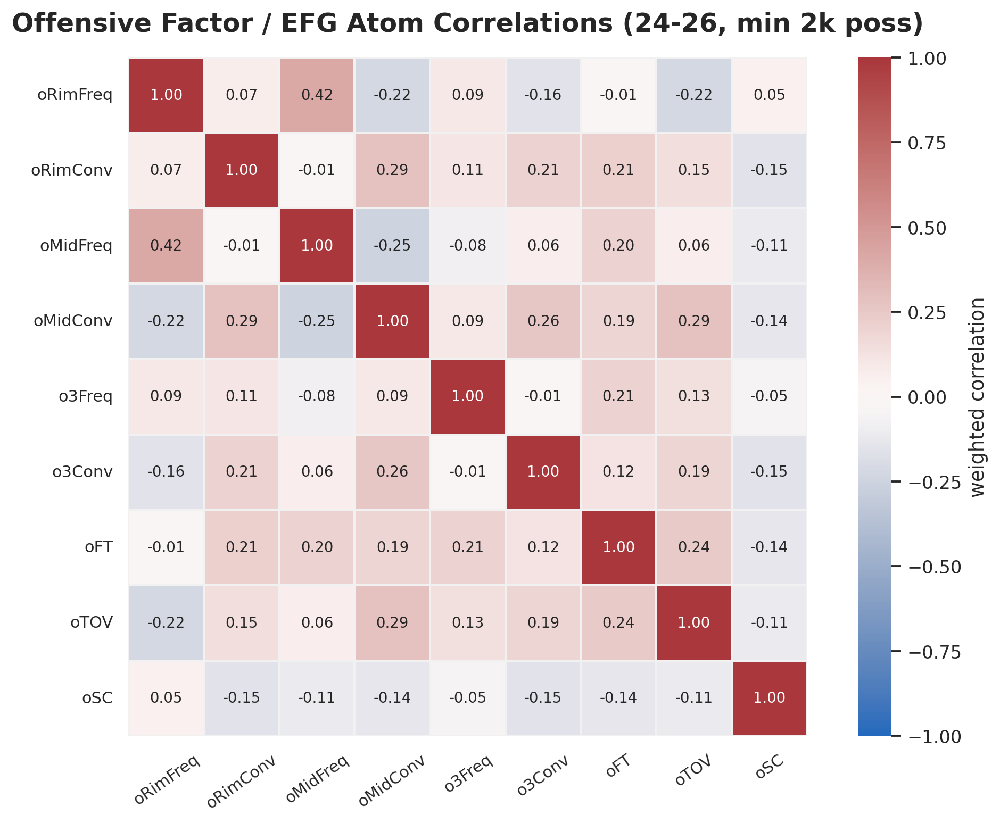
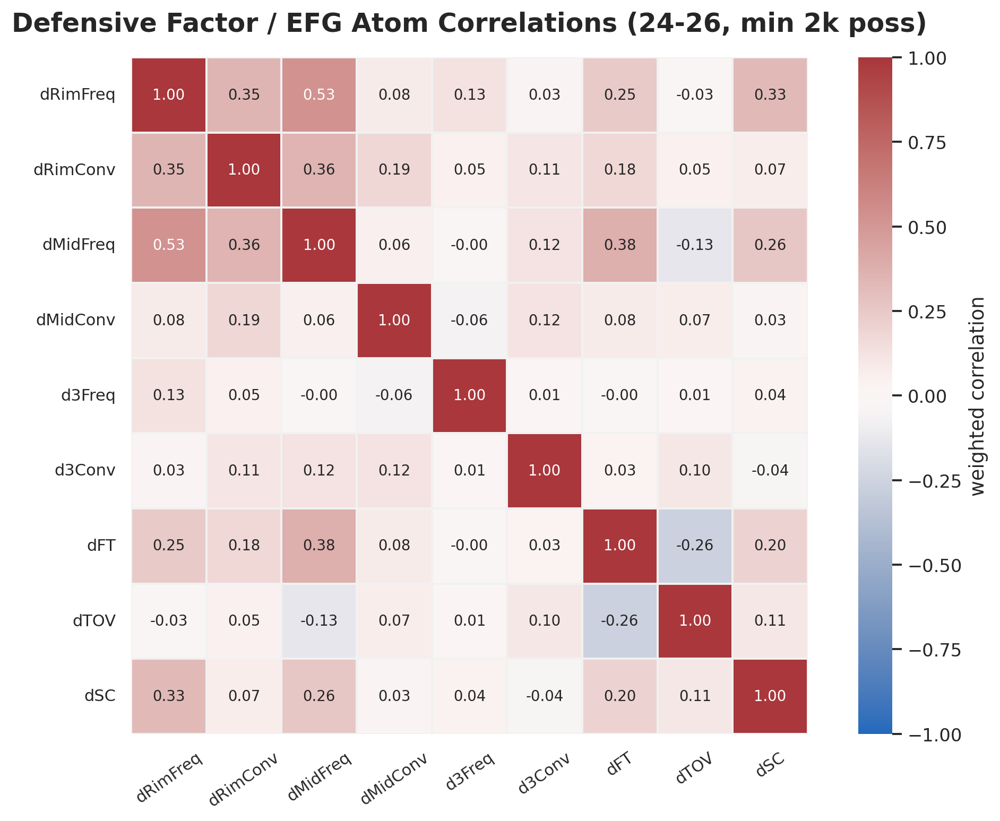

Draft of May 2026
Regularized adjusted plus-minus is powerful because it estimates player impact while controlling for the other nine players on the floor. It is also hard to trust as a public explanation because the usual output is a single coefficient. This paper introduces RAPM DECOMP, an additive framework that opens the RAPM coefficient into possession-value channels while preserving the adjusted-lineup discipline that makes RAPM useful. The central idea is simple: construct component targets on the same possession surface, verify the arithmetic before interpretation, solve each target with the same lineup-adjusted ridge operator, and test whether the resulting factors add back to the actual offensive and defensive RAPM coefficients.
The public RAPM DECOMP surface decomposes the actual offensive and defensive RAPM coefficients into EFG value, free-throw value, turnover value, and second-chance value. The EFG value branch is the shot-value branch: it is reported as a rolled-up factor and can be opened into an internal baseline plus rim, midrange, and three-point frequency and conversion atoms. Free-throw value is divided into trip frequency and trip severity. Turnover value is expressed in points, not merely as a turnover-rate coefficient, so it can be added to scoring terms. On the current 2024–2026 NBA public export, 797 player rows and 7.73 million possession-weighted player observations have maximum rounded residual 0.001 points per 100 possessions between actual RAPM and the factor sum, with possession-weighted mean absolute residual 0.000255. The long 1997–2026 export contains 2,859 player rows and 71.03 million possession-weighted observations with the same maximum rounded residual. The result is not a claim that basketball causality is solved. It is a claim that RAPM can be made less silent: the adjusted signal can be assigned to transparent possession channels with almost zero public accounting error.
Basketball statistics are often split into two unsatisfying families. Box-score and tracking-based impact metrics can explain what happened in basketball terms, but they can miss effects that appear only through teammates, opponents, spacing, screening, rotations, and lineup context. Adjusted plus-minus models control for teammates and opponents, but they usually return a single number. That single number is useful, but it is quiet. A player can have a large RAPM coefficient because his lineups generate better shots, draw more valuable free throws, avoid turnovers, crush second chances, suppress rim value, or combine several smaller effects. The coefficient itself does not say which channels carried the value.
RAPM DECOMP is an attempt to keep the strength of RAPM while opening the coefficient into basketball terms. The method does not regress a player-level RAPM rating on box-score summaries. It stays at the possession level, where RAPM is estimated. Each component is a mechanically defined target attached to the same lineup rows. The model then asks: if the dependent variable is shot value instead of total point differential, which players are associated with that shot value after controlling for teammates and opponents? The same question is asked for free throws, turnovers, and second chances.
The key constraint is additivity. Public decomposition columns should
not be mere labels placed beside a total coefficient. They should be in
common units, with an explicit test against the parent coefficient. The
current public RAPM DECOMP export does this in points per 100
possessions. On offense, the structure is: off = oEFG + oFT + oTOV + oSC + Residual.
The same structure holds for defense with dEFG,
dFT, dTOV, and dSC after
sign-flipping defensive factors so that positive is good for the
player’s team. The point of the paper is that the residual is almost
zero: the actual ORAPM and DRAPM coefficients decompose nearly perfectly
into these factors.
This paper makes three contributions. First, it defines an additive
RAPM-decomposition operator: component targets are solved with the same
lineup-adjusted ridge machinery as total RAPM. Second, it gives a
basketball schema for the largest scoring channels: first-chance shot
value, free-throw value, first-chance turnover value, and second-chance
value, with shot value reported publicly as
oEFG/dEFG and opened into a baseline closure
term plus location-frequency and location-conversion atoms. Third, it
reports the residual between actual RAPM and the factor sum in current
public exports and shows player profiles that are recognizable as
basketball rather than as arbitrary post-processing.
Adjusted plus-minus treats a stint or possession as an observation and the players on the floor as signed predictors. Ridge regularization stabilizes the estimate in the presence of repeated lineups, collinearity, and low-minute players. The resulting RAPM coefficient is a partial association between a player and team scoring margin, conditional on the other players in the row. This conditional structure is the core reason RAPM matters.
RAPM also has well-known limits. Players are not randomly assigned to lineups. Roles, coaches, teammates, opponents, score effects, and era effects all matter. Regularization reduces variance, but it does not create a randomized experiment. RAPM should therefore be read as adjusted evidence, not as a pure causal treatment effect.
The usual public workaround is to blend adjusted plus-minus with box-score, tracking, or scouting priors. Those hybrids can be excellent rating systems, but they answer a different question from decomposition. A prior-centered metric asks how to stabilize a player rating. RAPM DECOMP asks where the adjusted rating lands in the possession economy. Priors can later be attached to each channel, but the channel itself should have a mechanical target.
The method also differs from a box-score explanation layer. A player-level summary such as rim attempts, assists, turnover percentage, or offensive rebound rate can help explain a component, but it is not the component. The component is estimated from lineup-adjusted possession outcomes. For example, offensive rim-frequency value is not simply the player’s own rim-attempt rate. It is the adjusted value of lineups shifting first-chance shot value toward or away from the rim while that player is on offense.
The public lineage begins with adjusted plus-minus: estimate player effects from scoring margin while controlling for all players on the floor. Rosenbaum’s early public work introduced the broad idea to basketball audiences, and Sill’s regularized formulation made the approach more practical by using shrinkage and out-of-sample testing. Later possession-value models, including work by Cervone, D’Amour, Bornn, and Goldsberry, showed that basketball possessions can be valued as evolving states rather than only as final outcomes.
RAPM DECOMP sits between those traditions. Like RAPM, it uses lineup-adjusted estimation rather than assigning credit directly from the event log. Like possession-value work, it insists that the scoreboard can be opened into smaller states and events. The distinct move is to keep the RAPM design matrix and change the target. The model does not ask which player recorded a box-score event. It asks which players are associated with possession-value channels after the same teammate and opponent controls used in RAPM.
The immediate predecessor is a six-factor adjusted-plus-minus layer. That layer solves separate adjusted factors for scoring efficiency, turnovers, and rebounding on offense and defense. It is useful because it demonstrates that large portions of RAPM can be spanned by broad basketball families. The current 2021–2026 time-decayed six-factor export reconstructs total RAPM at R2 = 0.985745 with a possession-weighted mean absolute residual of 0.201 points per 100 possessions. That is already a strong result: shooting, turnovers, and rebounding are not just box-score labels; they are adjusted lineup channels.
But the six-factor layer also shows why a stricter additive layer is needed. True-shooting value, turnover rate, and rebounding rate do not naturally live on the same denominator or in the same units. A public table can use a second-stage regression to translate them, but the reader is still looking at a model of a model. RAPM DECOMP makes the scoring branch more direct. It uses point-valued component targets on a shared possession frame, then publishes component values that are already in the same units as total RAPM.
The motivation is therefore not to replace broad-factor RAPM. The broad layer is a useful map. RAPM DECOMP is a more exact accounting surface underneath the largest and most semantically crowded part of that map: how scoring value is created, lost, extended, and suppressed.
Let j index possession rows. Let yj be a target, such as total point differential, shot value, free-throw value, turnover value, or second-chance value. Let wj be an observation weight. Let X be the sparse player design matrix. In a simplified single-block notation, Xjp = +1 when player p is on the offensive side of row j, Xjp = −1 when player p is on the defensive side, and Xjp = 0 otherwise. Production solves use separate offensive and defensive columns and can apply different penalties by side, but the notation is enough to state the idea. The ridge estimate is β̂y = arg minβ∑jwj(yj − Xjβ)2 + λ∥β∥22. Define R(y) = β̂y, the regularized lineup-adjustment operator applied to target y.
If a row target decomposes as y = a + b + c, one might hope that R(y) = R(a) + R(b) + R(c). This is not the identity on which RAPM DECOMP relies. Separate ridge solves, recentering, nuisance terms, and rounded CSV exports can perturb raw coefficient sums even when row algebra is exact. RAPM DECOMP therefore measures the residual directly: Residual = R(y) − ∑kR(ck), where R(y) is the actual parent RAPM coefficient and R(ck) are the factor coefficients. In other words: build component targets that have a clear arithmetic relationship, solve them consistently, and show that the actual parent coefficient is reconstructed by the factor sum.
This ordering matters. A component coefficient is meaningful only if the target it came from is meaningful. If the row construction is wrong, a tidy player table is not evidence. If the row construction is sound but factor coefficients do not add back to the actual parent coefficient, the difference is the decomposition error. The public claim here is that this error is almost zero in the finished exports.
The public RAPM DECOMP table uses a nested decomposition. At the top
level: RAPM → Offense + Defense.
Within each side: Actual Side RAPM → EFG
Value + Free-Throw Value + Turnover Value + Second-Chance Value.
The parent is the actual published side coefficient: off
for offense and def for defense. The factor sum is checked
against that parent; it is not a substitute metric.
Shot value has two levels. The public
oEFG/dEFG factor is the rolled-up first-chance
non-free-throw shot-value channel. Inside that channel, the value above
the average first-chance shot is split into six atoms: EFG Value Atoms = Rim Frequency + Rim
Conversion + Midrange Frequency + Midrange Conversion + Three-Point
Frequency + Three-Point Conversion. The rolled-up public factor
is: EFG Value = EFG Baseline + EFG Value
Atoms. Free-throw value is split as: Free-Throw Value = Trip Frequency Value + Trip
Severity Value. Turnover value is split as: Turnover Value = Bad-Pass Turnover Value + Scoring
Turnover Value.
The temporal division is central. First-chance value is the offense’s value before the first offensive miss. Second-chance value is the value after that first offensive miss. This avoids hiding post-miss scoring inside a first-shot metric and avoids confusing offensive rebounding with the points that follow an extended possession.
A true first-chance turnover is a possession-ending turnover before a first-chance shot or free-throw completion. If a possession already produced a make, field-goal attempt, or completed free-throw sequence, a later terminal turnover does not retroactively erase that first-chance scoring. This guard is small in code and large in meaning: the same possession should not be counted both as realized first-chance scoring and as lost first-chance scoring value.
The public oEFG and dEFG factors are not
ordinary effective field-goal percentage. They are point-valued
first-chance non-free-throw shot targets on the shared possession
surface. The public rolled-up factor includes both a baseline shot-value
term and the six location atoms. The location atoms measure value above
or below an average first-chance shot, rather than crediting a player
merely for the existence of a shot. The baseline term keeps the
unatomized part of first-chance EFG value inside the EFG branch, so it
is not misassigned to free throws, turnovers, second chance, or
residual.
The frequency atoms price location mix. Rim frequency is valuable when moving a lineup’s first-chance shot diet toward the rim has positive expected value relative to the average first-chance shot. Midrange frequency can be negative when shifting toward midrange reduces value. Three-point frequency can be positive or negative depending on the loaded sample’s shot-value environment. The conversion atoms measure within-location make value after the average value of that location has been priced.
Free-Throw Value is split into trip frequency and trip severity. Frequency credits the creation of first-chance free-throw trips at the average trip value in the loaded sample. Severity is the value above or below that average trip, combining trip type and free-throw shooting. The current split is intentionally conservative: it separates creating trips from the value of those trips, but it does not yet separate trip type from shooter conversion in the public table.
Turnover Value must be in points if it is to be added to shot and free-throw components. A rate-style turnover RAPM is useful, but it is not additive with points. RAPM DECOMP therefore prices true first-chance turnovers by the first-chance scoring opportunity that was lost. The parent turnover value is then split into bad-pass turnover value and other scoring or ball-handling turnover value.
This translation is one of the main reasons the factor sum can reconstruct ORAPM cleanly. A turnover is not treated as a negative shot. It is treated as the missing first-chance possession value that a non-turnover possession would have produced on average in the relevant sample.
Production RAPM runs can include score-margin by period terms, season-phase fixed effects, time decay, age terms, or other nuisance blocks. These terms are not basketball skill components. They are included to keep player coefficients from absorbing broad context shifts. A public row must therefore be read with its run specification. The current primary NBA table used here is a 2024–2026 all-games run with score-margin adjustment, season-phase fixed effects, and side-specific ridge penalties of 2000 on offense and 4000 on defense.
The public file reports points per 100 possessions. Defensive components are sign-flipped so that positive values are good for the player’s team. This gives the public convention: Net RAPM = Offense + Defense, where positive offense and positive defense both mean positive player impact.
The player-facing component columns are centered by possession-weighted player means on the published universe. This does not change the underlying target. It chooses a public zero. The goal is readability: a value above zero means above the published player baseline for that component and side.
The production workflow has five steps.
Build possession rows with offensive players, defensive players, game metadata, and parent scoring targets.
Build component targets on those rows: shot value, free-throw value, turnover value, second-chance value, and their child atoms.
Verify target arithmetic before fitting player coefficients.
Solve each target with the same RAPM machinery and the same stated run controls.
Assemble a public weighted-factor table, sign-flip defense into a good-positive convention, center component columns, and report the residual between actual RAPM and the factor sum.
The workflow deliberately separates three artifacts that are easy to conflate. The processed possession files are the accounting surface. The raw component result files are separately regularized player estimates. The public weighted-factor file is the decomposition surface: it contains the actual parent coefficients, the factor coefficients, and the residuals. Each artifact has a different job. The processed files prove that the target is coherent. The raw result files let an analyst audit each component solve. The public file is what a reader should use when asking whether the factors add to actual RAPM.
This is why the paper emphasizes public residuals. A public decomposition should not ask the reader to take additivity on faith. It should show actual RAPM, show the factors, and show actual RAPM minus the factor sum. In the finished five-year downstream export, that difference is zero at published CSV precision for every player row.
RAPM DECOMP has two validation layers. The first is target-level arithmetic. The second is the public residual between actual RAPM and the factor sum.
The current processed 2024–2026 NBA surface verifies the internal EFG and free-throw sub-identities to floating-point scale across 777,744 regular-season and playoff possession rows. Table 1 reports the maximum absolute row gap and the number of rows with absolute gap greater than 10−9.
| Identity | Max absolute gap | Rows above 10−9 |
|---|---|---|
| Free throws = frequency + severity | 6.22 ⋅ 10−15 | 0 |
| Total EFG = baseline + EFG value | 5.68 ⋅ 10−14 | 0 |
| EFG value = rim + midrange + three | 8.88 ⋅ 10−15 | 0 |
| EFG value = six location atoms | 1.02 ⋅ 10−14 | 0 |
| Total EFG = baseline + six location atoms | 5.68 ⋅ 10−14 | 0 |
These checks are not model-fit statistics. They are arithmetic checks on the processed target surface. Their purpose is to make sure the child targets mean what the paper says they mean before any player coefficient is estimated.
The public RAPM DECOMP bundle then assembles solved component RAPMs into a weighted-factor table. Table 2 summarizes three current exports. The six-factor row is included as a baseline: it reconstructs full RAPM from independently solved shooting, turnover, and rebounding factors by a second-stage weighted regression. The RAPM DECOMP rows are public additive bundles whose component columns are already in point-value units; the reported residual is actual RAPM minus the factor sum.
| Export | Players | Possession weight | R2 | Max residual |
|---|---|---|---|---|
| Six-factor 2021–2026 td700 | 1,086 | 15,160,930 | 0.985745 | 0.810 |
| RAPM DECOMP 2024–2026 | 797 | 7,725,252 | 0.99999997 | 0.001 |
| RAPM DECOMP 1997–2026 | 2,859 | 71,027,184 | 0.99999997 | 0.001 |
The RAPM DECOMP residual is actual parent RAPM minus the factor sum.
On offense: oRESID = off − (oEFG + oFT + oTOV + oSC). On
defense the same definition applies with def and the
defensive factor columns. The scientific claim is that the true ORAPM
and DRAPM columns are reconstructed by these factor sums with
essentially no residual.
The residual is not a hidden fifth basketball component. It is the error term left after decomposing the actual parent RAPM coefficient into the published point-valued factors. A maximum residual of 0.001 points per 100 possessions is too small to carry basketball interpretation. It is rounding-scale decomposition error.
This is different from the residual in the six-factor comparison. The six-factor residual is the unexplained portion of a second-stage reconstruction from native-unit factor estimates. It is meaningful because the factors are not a direct point-valued decomposition of ORAPM and DRAPM. The RAPM DECOMP residual is smaller because the factors are constructed in the same units as ORAPM and DRAPM, so the public test is direct: parent coefficient minus factor sum.
The distinction matters for claims about "almost zero error." The claim is not that basketball is error-free or that every component is perfectly stable. The claim is that actual ORAPM and DRAPM decompose into the published factors with only rounding-scale residual. Statistical uncertainty remains in the component estimates; decomposition residual is the part that has been driven close to zero.
Figures 1, 2, and 3 are the most compact way to read RAPM DECOMP. Each player has eight bars: offense on the left, defense on the right, with a gap between the sides. Positive values go up; negative values go down. The four offensive bars add to ORAPM and the four defensive bars add to DRAPM up to the reported residual.



dEFG and
positive second-chance defense.Gilgeous-Alexander and Jokic have similar total values in this
export, but their profiles are not similar. Gilgeous-Alexander’s
offensive value is spread across oEFG, free throws, and
first-chance turnover value. Jokic’s offensive value is dominated by
oEFG, with meaningful second-chance value and a small
negative first-chance turnover term. RAPM DECOMP turns a one-number
comparison into a channel comparison without leaving the
adjusted-plus-minus framework.
Wembanyama illustrates the defensive side. His total value is
overwhelmingly defensive, with a large dEFG bar, positive
dFT, and positive second-chance defense. The same display
format makes the contrast visible: Jokic is an offense-led
oEFG outlier, Gilgeous-Alexander is balanced across
offensive channels, and Wembanyama is a defense-led value shape. These
statements are not film tags. They are adjusted possession-channel
estimates.
Consider Gilgeous-Alexander and Jokic. A one-number RAPM table says
both are near the top of the league. RAPM DECOMP says that the totals
have different shapes. Gilgeous-Alexander’s offensive profile combines
oEFG, free-throw value, and a very large positive
first-chance turnover-value term. That last term should be read as
possession preservation in point units, not merely as a low turnover
percentage. Jokic’s offense, by contrast, is dominated by
oEFG, with positive free-throw and second-chance value and
a small negative turnover-value term. His lineups generate enormous
first-chance oEFG even after the opponent and teammate
controls.
The defensive columns change the reading again. Gilgeous-Alexander
has a positive dEFG coefficient in this export, while
Jokic’s public dEFG component is negative and his defensive
value is carried more by second-chance defense and other terms. That
does not prove one player’s defensive mechanism by itself, but it tells
the analyst where to look. The model turns "good" into a set of narrower
questions.
The same pattern holds for Curry and Giannis. Curry’s shot value is mostly conversion-led, especially from three. Giannis’s shot value is rim-led, with large rim frequency and rim conversion value. Those statements are not just stylistic labels. They are adjusted point-value channels that sum back to the actual offensive RAPM coefficient.
| Player | oEFG | RimFreq | RimConv | MidFreq | MidConv | 3Freq | 3Conv |
|---|---|---|---|---|---|---|---|
| Nikola Jokic | 6.605 | 0.189 | 2.345 | 0.164 | 2.135 | 0.001 | 1.985 |
| Stephen Curry | 5.601 | 0.283 | 1.281 | 0.685 | 0.750 | 0.012 | 2.630 |
| Giannis Antetokounmpo | 5.225 | 0.719 | 2.746 | 0.785 | -0.483 | 0.017 | 1.242 |
| Kevin Durant | 4.821 | -0.195 | 1.743 | -0.795 | 1.756 | 0.023 | 2.074 |
| Tyrese Haliburton | 4.512 | -0.091 | 0.912 | 0.377 | 1.350 | 0.018 | 1.876 |
| Jamal Murray | 3.706 | -0.216 | 0.212 | -0.366 | 1.163 | -0.003 | 2.616 |
| Luka Doncic | 3.341 | -0.347 | 2.051 | 0.250 | 0.764 | 0.010 | 0.500 |
| Shai Gilgeous-Alexander | 3.042 | -0.303 | 0.987 | -0.201 | 1.619 | 0.008 | 0.700 |
The shot atoms keep one word, “shooting,” from doing too much work. Curry’s largest atom is three-point conversion value. Giannis combines large rim frequency and rim conversion value while carrying negative midrange conversion value. Durant is negative by frequency mix and strongly positive by conversion. Jokic has large positive conversion value in all three locations. These are lineup-adjusted possession-channel profiles, not simple shot charts.
| Player | dEFG | RimFreq | RimConv | MidFreq | MidConv | 3Freq | 3Conv |
|---|---|---|---|---|---|---|---|
| Rudy Gobert | 3.900 | 0.310 | 1.465 | 0.472 | 0.754 | -0.005 | 1.001 |
| Victor Wembanyama | 3.735 | 0.352 | 1.497 | 0.120 | 0.891 | 0.009 | 1.002 |
| Chet Holmgren | 2.906 | 0.205 | 2.059 | 0.206 | 0.362 | -0.000 | 0.174 |
| Derrick White | 2.461 | 0.072 | 1.104 | 0.126 | 0.166 | 0.005 | 0.953 |
| Shai Gilgeous-Alexander | 2.367 | 0.016 | 0.641 | -0.092 | 1.080 | -0.006 | 0.561 |
| Jusuf Nurkic | 2.328 | 0.226 | 0.986 | 0.239 | 0.227 | 0.005 | 0.621 |
| Marcus Smart | 1.646 | 0.166 | 0.530 | 0.094 | -0.247 | 0.010 | 1.086 |
The defensive atom table separates location deterrence from conversion suppression. A rim protector may appear through rim conversion suppression, through location mix, through second-chance value, or through a combination. The decomposition does not identify every physical mechanism, but it prevents all defensive value from being collapsed into one undifferentiated coefficient.
The factor correlations show that RAPM DECOMP is not merely a
leaderboard with extra columns. The factors have structure. In the
2024–2026 export, the main offensive factors are related but not
redundant: oEFG is positively correlated with
oFT and oTOV, while oSC moves in
a different direction. On defense, dFT and
dTOV are negatively related in this player sample, and
second-chance defense has its own shape.

The atom-level views are more useful for scouting questions. Offensive midrange conversion travels with several creation and preservation signals, but offensive second-chance value is not just another shooting column. Defensively, rim-frequency, rim-conversion, midrange-frequency, free-throw, and second-chance columns show a coherent interior-defense cluster.


RAPM DECOMP should be read as a map of where adjusted value lands, not as a complete causal explanation of how the value was generated. A player can increase offensive rim value by driving, passing, screening, spacing, or simply forcing defenses into a particular coverage. The component says that the adjusted lineup signal landed in rim value. It does not say that the player personally took every valuable rim attempt.
The same caution applies to defense. Positive defensive shot value means the opponent’s adjusted shot value declined while the player was defending, in the public good-positive sign convention. It can include contests, deterrence, scheme, opponent selection, teammate interaction, and rebounding consequences. It is a possession-channel estimate, not a film tag.
This limitation is also the source of the metric’s usefulness. RAPM DECOMP does not replace film or tracking analysis. It gives them sharper targets. Instead of asking why a player is good in one number, an analyst can ask why the player’s lineups show high first-chance shot value, negative turnover value, or unusual second-chance defense.
The long NBA export runs from 1997 through 2026. That historical reach is possible because the public shot-value decomposition uses possession, scoring, free-throw, turnover, rebound, lineup, and shot-location information that can be rebuilt across the long play-by-play archive. It does not require a complete tracking-era expected-value model for every season.
Long-window results should still be read carefully. League shot environments changed radically between 1997 and 2026. A midrange frequency value in an early 2000s context and a midrange frequency value in the current NBA are measured relative to the loaded run and nuisance-adjusted context, not relative to a timeless league. Season effects help, but they do not make eras identical.
The historical surface is therefore best viewed as evidence of scalability and as a tool for audited comparison. It is not a license to ignore era context. The same arithmetic contract can operate across three decades; specific player interpretations still require basketball judgment.
The decomposition can fail in several ways.
First, the target identities can fail. This is the most direct failure. If a child target does not add to its parent on the processed rows, then the public story is false no matter how good the leaderboard looks.
Second, a component can be arithmetically valid but statistically unstable. Small-sample channels, heavily collinear roles, and low-minute players can move with ridge penalty, time decay, or window choice. A component should not be promoted as stable merely because it is additive.
Third, a component can be semantically too coarse. Free-throw severity currently combines trip type and shooter conversion. That is a valid two-part split, but it may not answer every foul-drawing question. The correct response is to add a new child identity under severity, not to overload the current term.
Fourth, users can overread the columns. Offensive rim-frequency value is not the player’s own rim-attempt rate. Defensive three-point conversion value is not simply opponent luck. The columns are adjusted possession-channel estimates. They are powerful only when interpreted at that level.
RAPM DECOMP is not a replacement for a stable all-in-one public metric. It is a decomposition layer. A product stack can have a stabilized total impact rating, an additive RAPM DECOMP explanation underneath it, and then box-score, tracking, and film evidence underneath each component. The important point is that the explanatory evidence should explain a channel whose target is already defined.
This structure is especially useful for priors. A prior for total offense is blunt. A prior for rim frequency, free-throw frequency, scoring turnover value, or second-chance defense is more precise. The additive layer gives those priors targets. It also makes it harder to smuggle a box-score story into a RAPM coefficient without stating the basketball channel being modeled.
The first priority is stability validation. Each component should be tested for split-sample repeatability, predictive value, ridge sensitivity, time-decay sensitivity, and playoff sensitivity. Additivity is necessary for a public decomposition, but it is not sufficient for claiming that every component is a stable skill estimate.
The second priority is a richer shot-quality branch. Where
tracking-era expected-value data are available,
oEFG/dEFG can be split into pre-shot expected
value and making value more directly. The current public EFG atoms are
deliberately historical and broadly available; they are not the final
form of shot-quality attribution.
The third priority is clearer public presentation. Users should see
oEFG/dEFG, Free-Throw Value, Turnover Value,
and Second-Chance Value, with rim, midrange, and three-point atoms under
the EFG branch. Internal solver aliases and artifact names should remain
implementation details, not the language of the public paper.
RAPM is valuable because it resists easy box-score stories. But a single RAPM coefficient can become its own mystery. RAPM DECOMP shows that the mystery can be reduced without abandoning adjusted plus-minus. By defining possession-value targets, solving them through the same lineup-adjusted ridge operator, and publishing the actual parent coefficient alongside its factors and residual, the method turns one impact number into a set of basketball channels that still add back to the parent.
The claim is intentionally disciplined. RAPM DECOMP does not solve causality, replace film, or prove that basketball is simple. It shows that when a public impact metric can keep its books, it should. In the current public exports, actual RAPM minus the factor sum is only rounding-scale residual. That gives analysts a cleaner starting point: not merely who was valuable, but where the adjusted value appeared.
For each public player row, off is the actual offensive
RAPM coefficient. The offensive decomposition residual is: oRESID = off − (oEFG + oFT + oTOV + oSC).
The defensive side uses the public good-positive defensive sign
convention: dRESID = def − (dEFG + dFT + dTOV + dSC).
Net residual is: RESID = net_rapm − (off
factors + def factors).
| Term | Meaning |
|---|---|
| oEFG / dEFG | First-chance non-free-throw EFG value, after the baseline shot value is separated. |
| Rim Frequency | Value of shifting first-chance shots toward or away from rim attempts. |
| Rim Conversion | Within-rim make value after rim frequency is priced. |
| Midrange Frequency | Value of shifting first-chance shots toward or away from midrange attempts. |
| Midrange Conversion | Within-midrange make value after midrange frequency is priced. |
| Three-Point Frequency | Value of shifting first-chance shots toward or away from threes. |
| Three-Point Conversion | Within-three-point make value after three-point frequency is priced. |
| Free-Throw Value | First-chance free-throw value. |
| Trip Frequency Value | Average-value first-chance free-throw trip creation. |
| Trip Severity Value | Value above or below the average first-chance trip. |
| Turnover Value | Point-valued first-chance scoring opportunity lost on true first-chance turnovers. |
| Bad-Pass Turnover Value | Portion of turnover value assigned to bad-pass turnovers. |
| Scoring Turnover Value | Portion of turnover value assigned to other scoring or ball-handling turnovers. |
| Second-Chance Value | Post-miss scoring value in the side-level decomposition of actual RAPM. |
The empirical tables in this draft were generated from the local May 2026 pipeline outputs. The primary public NBA surface is the 2024–2026 all-games RAPM DECOMP weighted-factor export with score-margin adjustment, season-phase fixed effects, and side-specific ridge penalties of 2000 and 4000. The long historical surface is the 1997–2026 export with the same public schema. The six-factor comparison uses the 2021–2026 time-decayed weighted-factor export.
9
Dan Rosenbaum. Measuring how NBA players help their teams win. 82games.com, 2004.
Joseph Sill. Improved NBA adjusted plus-minus using regularization and out-of-sample testing. MIT Sloan Sports Analytics Conference, 2010.
Dan Cervone, Alexander D’Amour, Luke Bornn, and Kirk Goldsberry. A multiresolution stochastic process model for predicting basketball possession outcomes. Journal of the American Statistical Association, 2016.